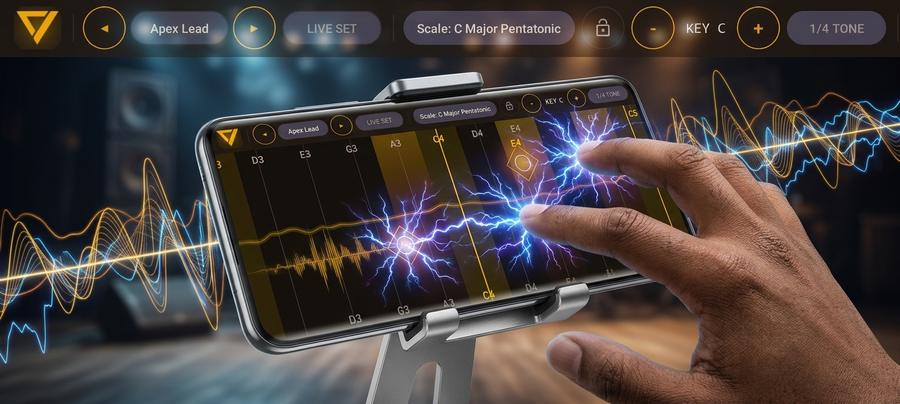
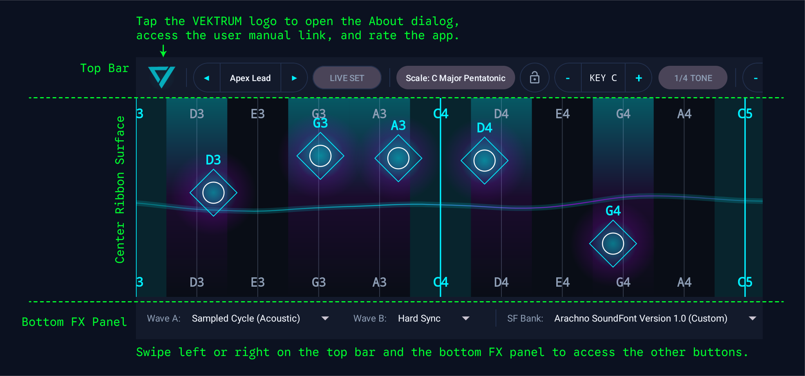
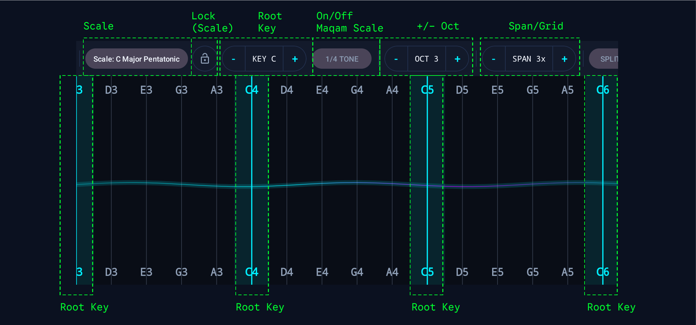
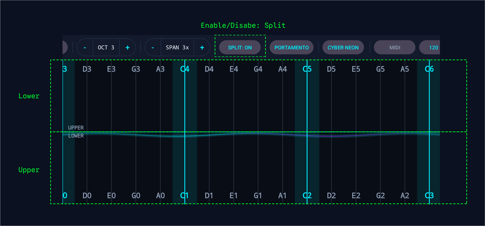
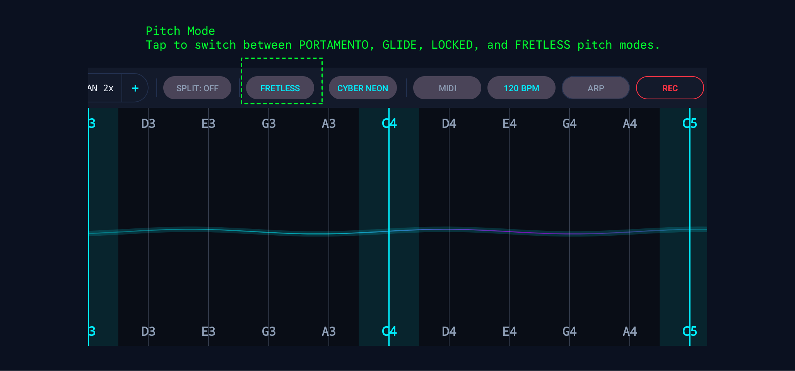
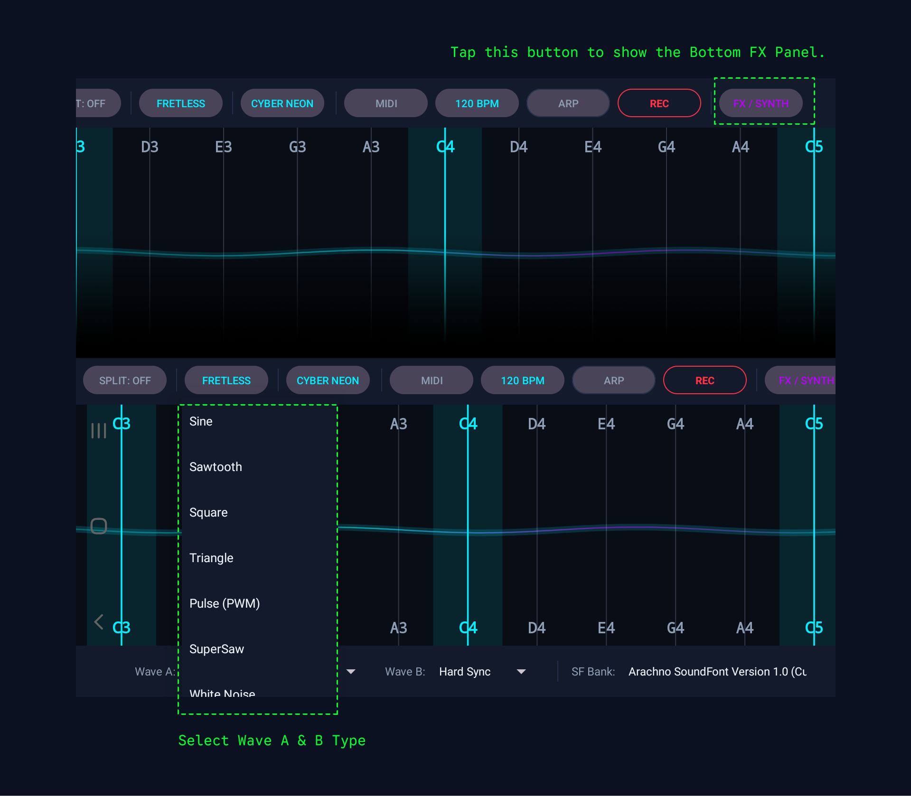
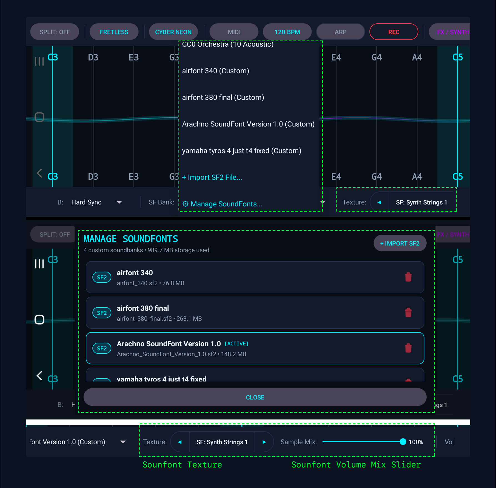

Vektrum Pro Synthesizer
Comprehensive User Manual, Acoustic Architecture & MPE Controller Reference Guide
Welcome to Vektrum Pro
Vektrum Pro is a state-of-the-art, multi-dimensional expressive synthesizer and MPE (MIDI Polyphonic Expression) controller engineered specifically for Android devices. Featuring a custom ultra-low latency native C++ audio engine (powered by Google Oboe and AAudio), continuous microtonal ribbon surface, dual morphing oscillators, hybrid SoundFont (SF2) sampling, studio stereo delay, and full Arabic/Oriental quarter-tone matrices, Vektrum bridges the tactile freedom of acoustic instruments with the infinite soundscapes of modular synthesis.
1. Product Overview
Unlike conventional keyboard synthesizers restricted to binary on/off switches, Vektrum Pro implements a continuous tactile ribbon interface inspired by legendary expressive instruments such as the Haken Continuum Fingerboard, Ondes Martenot, and Roli Seaboard.
Every finger touch is processed simultaneously across multiple expressive axes:
X-Axis: Continuous Pitch
Continuous horizontal position maps to microtonal pitch, portamento, or quantized scale steps with zero seam boundaries.
Y-Axis: Timbre & Dynamic Velocity
Vertical slide dynamically modulates 24dB Moog filter cutoff and SoundFont velocity scaling from 0% (bottom) to 120% (top).
Z-Axis: Pressure & Aftertouch
Dynamic contact surface area detection calculates continuous channel pressure for expressive aftertouch swells.
1.2 Quick Start Guide
- Launch & Audio Setup: Open Vektrum Pro in landscape mode. Plug in low-latency wired headphones or connect via USB Audio interface for maximum acoustic clarity.
- Strike a Note: Tap anywhere on the illuminated ribbon grid. The upper section triggers high-velocity, bright tones, while the lower section yields gentle, soft expressions.
- Perform a Horizontal Slide: Glide your finger across note columns to hear lush portamento or continuous analog pitch glides.
- Switch Presets: Tap the PREV [◀] and NEXT [▶] buttons on the top bar or tap the preset name to open the full catalog.

1.3 Interface Layout Architecture
The Vektrum Pro interface is divided into three ergonomic performance zones:
| Zone | Controls Included | Primary Purpose |
|---|---|---|
| Top Navigation Bar | Preset Selector (Prev/Next/List), Scale, Root Key, 1/4 Tone Matrix, Octave (-/+), Span, Split Mode, Pitch Mode, Theme, MIDI Hub, WAV Record. | Global performance routing, scale configuration, preset navigation, and system settings. |
| Center Ribbon Surface | Continuous multi-touch grid, root note indicators, note labels, visual touch ripples, split keyboard boundary line. | Tactile multi-touch performance ribbon for polyphonic playing, sliding, and vibrato. |
| Bottom FX & Synthesis Panel | Wave A & B Selectors, Master Volume, Unison Detune, Moog Filter Q, ADSR Envelope, Delay FX (Time, Feedback, Volume, Width, Freeze), Glide Rate, SoundFont Sampler controls. | Real-time sound sculpting, acoustic envelope shaping, delay manipulation, and hybrid acoustic layer blending. |

2. Ribbon & Multi-Touch Playing Surface
The central ribbon of Vektrum Pro operates at an ultra-responsive 120Hz/240Hz touch sampling rate. Unlike standard piano keyboards with physical gaps between black and white keys, the ribbon surface presents continuous columns proportional to the selected musical scale.
2.1 Visual Grid & Root Note Highlights
- Root Key Highlight: The fundamental tonic note (e.g., C, D, or A) is highlighted with high-contrast accent illumination and distinct column striping.
- Scale Step Columns: All in-scale intervals are clearly labeled with note names and octaves (e.g.,
C3,E3,G3). - Target Latching & Hysteresis: A mathematical deadband prevents accidental pitch fluttering when fingers rest at column boundaries. A finger must intentionally cross by more than 60% of the column width to trigger a discrete note switch.

2.2 Multi-Dimensional Expression (3D Touch)
Each individual finger contact independently manipulates three simultaneous acoustic parameters:
Vertical Strike Velocity & Expression
Touching higher up on the ribbon strikes the note with high velocity (up to 1.0 forte), simultaneously opening the 24dB low-pass filter cutoff for bright, aggressive leads. Touching near the bottom produces soft, delicate pianissimo timbre.
Note for SoundFont SF2: The vertical slide velocity scales from 0% (bottom) to 120% (top), reaching full 100% velocity at ~83% of the ribbon height so you never have to strain your fingers against the very top bezel.
Continuous Pressure / Aftertouch
By flattening your finger pad to increase contact area, Vektrum Pro calculates simulated pressure (Aftertouch), introducing subtle drive, saturation, and filter resonance swells to sustained chords or lead solos.
2.3 Split Keyboard Mode (Dual-Zone Split)
Tapping the SPLIT button on the top bar bisects the playing surface horizontally into two completely independent performance ribbons:
- Upper Zone: Optimized for high-register lead melodies, soaring solos, and expressive vibrato ribbons.
- Lower Zone: Transposed down by 1 to 2 octaves, configured for walking basslines, deep sub-basses, or rhythmic chord pads.
- Independent Y-Axis: Each split half calculates vertical cutoff and velocity scaling independently from its respective center partition line.

3. Pitch Modes & Glide Articulation
Vektrum Pro offers 4 distinct pitch modes to suit any performance genre, selectable via the btnPitchMode button on the top bar:
LOCKED
Discrete note snapping only. Operates exactly like an acoustic piano keyboard. Sliding your finger jumps instantly between scale notes without any pitch gliding.
PORTAMENTO
Legato Quantized Glide (Minimoog / TB-303 Acid style). Notes stay strictly quantized to scale intervals while resting on a key. When sliding into a new note, the pitch glides smoothly directly to the target note, bypassing all intermediate chromatic/microtonal notes!
GLIDE
Continuous pitch bend with magnetic attraction. Provides expressive micro-pitch deviation with an acoustic "magnetic pull" snapping to the nearest scale tone.
FRETLESS
100% continuous microtonal ribbon (Violin, Cello, Theremin). Absolute continuous pitch tracking without scale quantization for infinite microtonal expression.

3.2 Deep Dive: Portamento (Legato Glide)
In classic synthesizers like the Minimoog, Roland TB-303, and Prophet-5, portamento allows keyboardists to slide between discrete musical intervals without sounding chromatic frets.
In Vektrum Pro, Portamento mode is engineered with dual-engine mathematical continuity:
- Native C++ Oscillators: Employs an audio-rate exponential curve computed sample-by-sample at 48,000 Hz, eliminating zipper noise, steps, or clicks.
- SoundFont SF2 Sampler: Runs an audio-buffer pitch-interpolator operating every 2 to 4 milliseconds, ensuring acoustic SF2 samples (such as violin, brass, flute, and synth leads) glide with genuine analog legato grace.
3.3 Glide Rate Speed Control
Located in the bottom sound panel, the GLIDE RATE slider governs the time constant of pitch transitions:
- 0% - 15%: Ultra-fast, snappy transitions (~20ms), ideal for fast arpeggios, staccato funk, and tight synth basses.
- 35% - 65%: Classic musical legato portamento (~70ms to 120ms), optimal for expressive lead solos and brass melodies.
- 75% - 100%: Majestic, sweeping slow glides (~250ms to 500ms), perfect for ambient pads, cinematic soundscapes, and dramatic drops.
4. Dual-Oscillator Synthesis Engine (C++ NDK)
At the heart of Vektrum Pro lies an industrial-grade audio engine written in clean, thread-safe modern C++17. Running directly on Android's low-latency audio HAL via Google Oboe, Vektrum achieves real-world audio roundtrip latency under 10 milliseconds on supported hardware.
4.1 10 Analog & Digital Waveforms with Continuous Morphing
Vektrum Pro features two independent primary oscillators (Wave A and Wave B) capable of generating 10 professional-grade synthesized waveforms:
1. Sine
Pure fundamental tone with zero harmonic distortion. Ideal for deep sub-basses, pristine flute keys, and clean sine plucks.
2. Triangle
Warm and gentle tone featuring a strong fundamental with subtle odd harmonics. Excellent for soft acoustic woodwinds and electric pianos.
3. Sawtooth
Bright, sharp, harmonically dense waveform containing all even and odd harmonics. The cornerstone of brassy synth leads and punchy analog basslines.
4. Square / Pulse
Hollow vintage character rich in odd harmonics. Perfect for acid squelch basses, retro 8-bit chip tunes, and woody clarinet tones.
5. Pulse Width Modulation (PWM)
Continuously modulated duty cycle that imparts rich, swirling, chorus-like movement without requiring external effects.
6. SuperSaw
Multi-saw stacked oscillator with stereo detune spread inspired by the iconic Roland JP-8000. Delivers massive, stadium-sized EDM and trance anthems.
7. Vocal Formant
Acoustic resonance modeling of the human vocal tract (A-E-I-O-U formants). Produces expressive talking synthesizers and soulful singing leads.
8. Breathy Noise
Band-limited acoustic air noise for realistic pan-flute breath attacks, percussive wind chiffs, and atmospheric cinematic textures.
9. Metallic Bell
Inharmonic frequency modulation (FM) spectrum generating crystalline chimes, shimmering glockenspiels, and vibraphone harmonics.
10. Warm Overdrive
Soft-saturating analog waveshaping with tube-like harmonic warmth. Adds aggressive punch and grit to modern solo leads.
The engine allows you to pair any two waveforms (Wave A and Wave B) and continuously morph between them via touch ribbon vertical position or automated LFO modulation, producing infinite acoustic timbres.

4.2 3-Voice Stereo Unison & Detune Spreader
Each polyphonic touch triggers three parallel oscillator voices per finger. The UNISON DETUNE slider spreads the frequencies of voice 2 and voice 3 symmetrically by up to ±35 cents, while panning them across the stereo field.
- 0 Cents: Pure, focused mono directness for cutting basslines.
- 10 - 18 Cents: Lush analog chorusing, imparting immense warmth and organic movement.
- 25 - 35 Cents: Massive "Supersaw" EDM stadium leads and cinematic wall-of-sound textures.
4.3 Moog-Style Filter & ADSR Envelope Generator
Vektrum Pro includes a digital model of the classic 24dB/octave 4-pole Moog ladder low-pass filter, featuring auto-compensated resonance (Q):
- Filter Resonance (Q): Adjustable from 0.707 (transparent butterworth roll-off) up to 8.0 (screaming self-oscillation and aggressive squelch).
- Attack (A): 0.001s to 2.0s. Controls how quickly the sound reaches peak volume upon touch.
- Decay (D): 0.01s to 3.0s. Governs the time taken to drop from peak strike to sustained level.
- Sustain (S): 0% to 100%. The steady volume maintained as long as your finger remains held.
- Release (R): 0.01s to 5.0s. The acoustic decay tail lingering after lifting your finger.
5. Hybrid SoundFont (SF2) Sampler
Vektrum Pro goes beyond pure synthetic waveforms by incorporating a complete SoundFont 2 (SF2) Sample Engine. This allows you to blend pure analog oscillators with real-world acoustic instruments (Acoustic Pianos, Strings, Middle Eastern Ouds, Saxophones, Flutes, and Ethnic Percussion).
5.1 SoundFont Architecture & 5 Built-in SoundBanks
Managing soundbank presets is streamlined through dedicated top-bar and bottom-panel controllers. Vektrum Pro includes 5 comprehensive factory soundbanks containing hundreds of multi-sampled instruments:
- Bank Dropdown (spSoundFontBank): Instantly switches between factory soundbanks and user-imported SF2 libraries.
- Preset Selector Buttons:
- PREV [◀] (btnPrevSfPreset): Immediately steps back to the preceding SoundFont instrument.
- PRESET (btnSfPreset): Displays the active preset name and opens the full scrolling search dropdown list.
- NEXT [▶] (btnNextSfPreset): Cycles forward to the next instrument instantly during live performance.

5.2 Hybrid Mix & Calibrated Velocity Volume
The HYBRID MIX slider controls the acoustic blend ratio between the C++ Analog Synthesizer and the SF2 Sampler:
- 0%: Pure Analog Modeling Synthesis (100% C++ Waveform Oscillators).
- 50%: Balanced Hybrid Layer (e.g., analog saw lead layered seamlessly on top of an acoustic cello).
- 100%: Pure SoundFont Acoustic Sample Playback.
5.3 Importing Custom User SoundFonts (.sf2)
You can expand Vektrum Pro with any standard SoundFont 2 (.sf2) file from your device storage:
- Tap the SoundFont Bank dropdown and select "+ Import SF2 File...".
-
Use the Android File Picker to locate your
.sf2file on your internal storage or SD card. - Real-Time Import Progress Dialog: As soon as a file is selected, Vektrum Pro displays a real-time progress dialog showing the file name, copied bytes / total size, percentage progress bar, and stage status.
- Import Background Option: For massive soundbanks (100MB - 500MB+), tap the IMPORT BACKGROUND button. The dialog closes instantly so you can continue playing and browsing while the file imports quietly in the background. A notification announces when the instruments are loaded and ready!
6. Scales & Oriental Quarter-Tone Tuning
Vektrum Pro supports over 40 diverse musical scale modes from Western, Middle Eastern, Indian, and Asian traditions:
6.1 Root Key Transposition
Transposing the scale across the ribbon is effortless:
- Root Key [- / +]: Transposes the root key of the entire ribbon chromatically by semitones (e.g. C → C# → D).
- Direct Key Selector: Tap on the Root Key badge (e.g. "KEY C") to open the 1-tap chromatic key picker.
6.2 Scale Lock Feature (Audition Presets in your Chosen Scale)
A standout professional feature in Vektrum Pro is the dedicated SCALE LOCK button (located directly beside the Scale selector on the top toolbar):
How Scale Lock Enhances Performance:
By default, factory presets store the scale chosen by their sound designer (e.g., Preset A might be saved in D Minor, while Preset B is in G Major Pentatonic). When you are composing a track or performing live in a specific musical key (e.g. F# Dorian or E Maqam Rast), you often want to audition different synth patches without the scale resetting on every preset change.
- Scale Lock ON (Illuminated Neon Accent Border): Your active root key, scale mode, and microtonal quarter-tone settings remain strictly locked. As you press PREV [◀], NEXT [▶], or select custom patches, only the sound waveform, filter, and envelopes change—your musical scale is 100% preserved!
- Scale Lock OFF (Muted Gray): Loading a preset automatically restores whatever scale and tuning was saved into that preset file.
6.3 Oriental Matrix & Quarter-Tone (Sikka) Tuning
Tapping the 1/4 TONE button opens the dedicated Middle Eastern Oriental Tuning Matrix dialog. This unlocks traditional Arabic, Turkish, and Persian microtonal maqamat:
| Maqam Preset | Microtonal Detuned Notes (-50 Cents Quarter-Tone) | Typical Emotional Mood |
|---|---|---|
| Maqam Rast | E ½ flat, B ½ flat | Pride, grandeur, clarity, and majesty. |
| Maqam Bayati | E ½ flat | Vitality, joy, and deep emotional nostalgia. |
| Maqam Saba | E ½ flat, G-flat | Deep sorrow, spiritual transcendence, longing. |
| Maqam Sikah | E ½ flat, B ½ flat, F# | Solemn devotion, romantic warmth, meditation. |
7. Master BPM & Global Tap Tempo Engine
Vektrum Pro incorporates a centralized Master BPM Clock Engine that synchronizes rhythmic delay repeats, arpeggiator clock subdivisions, and live performance tempo in lockstep across the entire application.
7.1 Real-Time Tap Tempo Pad & Interactive Controls
Tapping the TEMPO (BPM) button on the top toolbar opens the Global Master Tempo Dialog:
Interactive Big Tap Pad
Tap the large responsive TAP TEMPO button in time with your live drummer, DJ track, or backing beat. The engine averages your strike intervals in real-time to compute the exact BPM instantly.
Direct Numeric Input ("TAP TO EDIT")
Tap directly on the central 120 BPM readout to trigger the numeric keypad dialog. Enter any exact tempo between 40 and 280 BPM with 1-tap precision.
Steppers (-5, -1, +1, +5)
Fine-tune your tempo seamlessly during live performance without interrupting audio playback or arpeggiator grooves.
Continuous Tempo SeekBar
Drag the smooth illuminated slider for broad tempo adjustments spanning 40 BPM (slow ambient ballads) to 280 BPM (speedcore & drum'n'bass).
7.2 Quick Tempo Presets (80 — 160 BPM)
For instant stage adjustments without searching or sliding, Vektrum Pro provides 9 one-touch Quick Tempo Chips:
Two-Way Live Sync: When you adjust tempo via the slider, steppers, or Tap Pad, if the resulting BPM matches one of these values, its chip highlights automatically.
7.3 Studio Stereo Delay Tempo Synchronization
Activate the SYNC DELAY TO TEMPO switch to mathematically lock your stereo delay echoes to the song's BPM. Choose from 6 standard musical subdivisions:
| Subdivision | Musical Note Value | Calculated Milliseconds @ 120 BPM | Best Acoustic Application |
|---|---|---|---|
| 1/4 (Beat) | Quarter Note (1.0x) | 500 ms | Standard straight delay echo on the beat. |
| 1/8 (Half) | Eighth Note (0.5x) | 250 ms | Snappy rhythmic pulses and driving dance lines. |
| 1/8D (Dotted) | Dotted Eighth (0.75x) | 375 ms | The legendary U2 / The Edge syncopated ambient bounce. |
| 1/16 (Slap) | Sixteenth Note (0.25x) | 125 ms | Tight vintage rockabilly and slapback echo. |
| 1/8T (Triplet) | Eighth Triplet (0.333x) | 166 ms | Shuffle grooves, trap hi-hat echos, and swing rhythms. |
| 1/2 (Long) | Half Note (2.0x) | 1000 ms | Expansive cinematic space echoes and ambient trails. |
8. Studio Arpeggiator (Vektrum Pro)
Inspired by the legendary arpeggiator in FL Studio and modern analog hardware synthesizers, Vektrum Pro includes an advanced, tempo-synced Studio Arpeggiator designed specifically for touch ribbon multi-touch performance.
8.1 Alternating Ping-Pong Dual-Voice Audio Engine
Traditional mobile arpeggiators suffer from muddy overlapping notes, clicks, and double-triggering when multiple touch fingers are held. Vektrum Pro solves this through a custom Dual-Voice Alternating Ping-Pong Architecture in native C++:
Alternating Dual Voice (Voice 0 ↔ Voice 1)
Odd steps trigger Voice 0 while Voice 1 gracefully releases; even steps trigger Voice 1 while Voice 0 releases. This guarantees zero voice stealing clicks, clean note-to-note transitions, and 100% individual note definition.
Continuous Phase & Filter Registers
Instead of wiping oscillator phase and filter history on every step, Vektrum Pro retains continuous oscillator phase and biquad delay registers. This eliminates 100% of the DC thumps, pops, and harmonic clicks common in mobile synths.
8.2 Pattern Modes, Clock Rates & Octaves
Configure the progression and rhythm of your arpeggios through dedicated controls:
Pattern Modes
- UP: Ascends from lowest held note to highest.
- DOWN: Descends from highest to lowest.
- UP / DOWN: Cycles up then down smoothly.
- RANDOM: Algorithmic generative note sequences.
Master Step Rate
- 1/16 (Fast): 4 steps per beat — ideal for driving trance and synthwave arps.
- 1/8 (Standard): 2 steps per beat.
- 1/8T (Triplet): Swing triplet groove.
- 1/4 (Pulse): 1 step per beat for bass pulses.
Octave Expansion
- 1 OCT: Confined to held pitches.
- 2 OCT: Repeats pattern +1 octave above.
- 3 OCT: Sweeps across a massive 3-octave melodic cascade.
8.3 Note Gate & Articulation
Fine-tune the sustain duration of each note before the next step triggers:
- LEGATO (98% Gate — Default): Notes sustain continuously into the next step with zero silence gap, producing a buttery smooth, uninterrupted melodic flow.
- SMOOTH (92% Gate): Subtle acoustic separation between notes while retaining warm body and sustain.
- STACCATO (75% Gate): Detached, punchy, plucky articulation with clean rhythmic pauses between notes.
8.4 Latch / Chord Hold Mode
Toggle LATCH / HOLD MODE to ON to enable hands-free arpeggios:
9. Studio Stereo Delay & Presets
Vektrum Pro includes a dedicated ping-pong cross-feedback delay line implemented directly in native C++ with DC-blocker filtering to prevent muddy low-end buildup.
9.1 Delay Parameters & Smart-Touch Sliders
- Delay Time (ms): Regulates echo interval from tight slapback (50ms) to dub echos (1000ms).
- Delay Feedback: Regulates the number of repeating echoes. At 0%, you get a single clean reflection.
- Delay Volume: Sets wet/dry mix of the delay output into the master bus.
- Stereo Width: Controls ping-pong separation between left and right channels.
- Infinite Freeze (∞): Locks the echo buffer into an infinite, non-decaying ambient soundscape looper.
9.2 Preset Browser, Save & Share
Tapping the preset name button opens the categorized Preset Browser dialog:
- Category Filter Chips: Instantly filter between ALL, LEADS, PADS, BASS, PLUCK, ORIENTAL, and SFX.
- Saving Custom Patches: Tap the Save icon to store all synth parameters, scales, and FX settings under your own custom name.
- Preset Export & Sharing (.vektrum / .json): One-tap share button exports your patch directly to WhatsApp, Telegram, Google Drive, or email.
- Preset Import: Automatically parses and verifies shared
.vektrumfiles sent by fellow musicians.
9.3 Live Set Performance Slots
For stage keyboardists, the Live Set feature allows you to bank up to 16 quick-recall performance slots. Switch between completely different patches (e.g. Lead → Acoustic Piano → Synth Bass) with zero audio dropouts or loading lag during live performance transitions.
10. Lossless WAV Recording & DAW Integration
Vektrum Pro allows you to capture live performances in pristine, uncompressed 32-bit Float 48 kHz stereo WAV format directly from the master audio stream with zero CPU latency hit.
10.1 Recording Workflow & Storage Directory
- Tap the red REC button on the top bar. The recording timer pulses red as audio is streamed to flash storage.
- Tap STOP when finished. The Recording Preview Dialog automatically appears.
- Audition your recording with the built-in mini player, view the visual waveform, or tap SHARE to send to your DAW or cloud drive.
-
1-Tap Copy Storage Location: The dialog clearly displays the physical device storage path (e.g.
/storage/emulated/0/Music/Vektrum/) and includes a 1-tap COPY button for quick file manager access.
10.2 MPE MIDI Controller & FL Studio Integration
Vektrum Pro functions as a full-fledged MPE (MIDI Polyphonic Expression) Controller. You can use your Android tablet or phone to play and modulate virtual instruments inside FL Studio, Ableton Live, Logic Pro, Bitwig, Cubase, or hardware synths.
Connecting Vektrum to FL Studio (PC/Mac)
- Connect your Android device to your computer via USB data cable.
- Pull down Android notification shade, tap the USB connection notification, and select "MIDI" mode.
- Open FL Studio, press
F10(MIDI Settings). - Under Input, select your Android device and click Enable (green indicator turns ON).
- In Vektrum Pro, tap the MIDI button on the top bar and toggle MPE OUT to ON.
In Vektrum Pro, tap MIDI → SCAN BLE MIDI to pair wirelessly with your computer or BLE MIDI hub.
Tip for Windows: Use a free virtual MIDI bridge utility such as MIDIberry + loopMIDI to forward Windows Bluetooth MIDI directly into FL Studio.
10.3 Motion & Gyroscope Tilt Modulation
Using built-in hardware IMU accelerometers, Vektrum Pro allows you to modulate sound parameters by tilting your physical tablet:
- Pitch Tilt (Tilt Forward / Backward): Introduces natural acoustic vibrato and micro-pitch bends.
- Roll Tilt (Tilt Left / Right): Dynamically sweeps filter cutoffs and delay feedback rates.
11. Troubleshooting & Glitch Resolution
- Disable Battery Saver / Power Saving Mode: Android power-saving modes throttle CPU clock speeds, which may interrupt real-time audio threads.
- Use Wired Audio: Bluetooth audio headphones introduce 100ms - 200ms latency due to SBC/AAC codecs. Always use the built-in speaker, 3.5mm jack, or low-latency USB-C audio for live playing.
- Close Intensive Background Apps: Screen recorders and heavy background tasks may cause audio buffer underruns.
- Check Android hardware Media Volume buttons.
- Verify the VOLUME slider in Vektrum's bottom panel is above 0%.
- If playing in SoundFont mode, ensure HYBRID MIX is greater than 0% and that the selected bank is loaded.
- Ensure the ATTACK envelope slider is not set to an excessively long value (e.g. > 1.5s).
- Ensure Android USB mode is explicitly set to "MIDI" (not "Charging Only" or "MTP File Transfer").
- In FL Studio, verify that the Android device is highlighted and Enable is toggled ON (green light).
- Inside Vektrum Pro, open the MIDI dialog and verify that MPE OUT is turned ON.
In Vektrum Pro v1.5.5+, both engines are synchronized to the Glide Rate slider. However, some dense multi-sample SoundFonts have baked-in vibrato or fixed release loops. For maximum portamento glide clarity on SoundFonts, select solo instruments (such as leads, violins, or flutes) and set Glide Rate between 35% and 65%.
Recommended Asset: Graphic or flowchart explaining how to troubleshoot audio latency and USB MIDI setup.
11.2 Frequently Asked Questions (FAQ)
Q: Does Vektrum Pro require an internet connection?
A: No! Vektrum Pro is 100% offline and standalone. No telemetry, account sign-in, or internet connection is required to synthesize sound, load soundbanks, or record lossless WAV files.
Q: What is the maximum polyphony supported?
A: The C++ Analog Engine supports up to 8 polyphonic multi-touch voices (with 3 unison oscillators each = 24 total oscillators). The SF2 SoundFont engine supports up to 32 simultaneous sample voices with intelligent voice stealing.
Q: Where are user presets and audio recordings saved?
A: User presets are saved in Vektrum's private app database (and can be exported as .vektrum files). WAV audio recordings are stored directly in your public Music/Vektrum/ storage directory for universal access.
Q: Can I use Vektrum Pro with external hardware synthesizers?
A: Yes! Connect a standard USB-MIDI interface via a USB-OTG adapter to your Android device. Vektrum Pro will instantly detect the hardware interface and transmit MPE/MIDI out to your analog synths and eurorack modules.